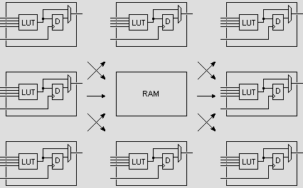

Os FPGA's são construidos apartir de uma célula lógica basica. Um FPGA contém milhares de células lógicas. A célula lógica é basicamente composta de uma LUT (Small Look-up Table), um Flip-Flop tipo D e um Mux 2 para 1.
A LUT é como se fosse uma pequena RAM que pode implementar qualquer função lógica. Geralmente ela tem poucas entradas (4 na figura acima), então por exemplo uma porta AND de 3 Entradas caberia nela e sobraria uma entrada livre ainda.
Cada célula lógica pode ser conectado a outras células através dos recursos de interconexão ( fios e mux que estão colocados em volta das células lógicas ). Cada célula pode fazer pouca coisa, mas várias delas conectadas podem realizar praticamente qualquer coisa.
Os recursos de interconexão podem inclusive ir até os limites do FPGA onde estarão as células que fazem a conexão com o meio exterior do FPGA (Células de Entrada e Saída).
Além dos recursos de interconexão, os FPGA's contém linhas dedicadas de alta velocidade para comunicação com células vizinhas. O tipo mais comum de linhas dedicadas são as Correntes de Tramissão. Essas Correntes de Tramissão permitem a criação eficiente de circuitos que realizam funções aritiméticas, por exemplo somadores ou contadores.
O FPGA também contém blocos de RAM estática que pode ser usadas e controladas pelos elementos lógicos.

Existem muitos parametros para o funcionamento da RAM Interna dos FPGA's. O parametro principal, é quantos agentes irão acessar a RAM simultaneamente.
Para saber quantos agentes podem acessar a RAM, basta contar o numero de endereços, e pontos de controle separados da RAM. Cada agente terá sua bus de endereço, dados e controle.
Há dois tipos de RAM no FPGA: As Blockram's e RAM's Distribuidas. Geralmente o tamanho necessário para a função lógica determina qual será usada.
Os FPGAs costumam ter muitos pinos, mas geralmente são separados em duas categorias. Os Pinos do Usuário e Pinos Dedicados.
Os Pinos do usuário são geralmente chamados de IOs (Input and Output), I/Os, I/Os do usuário, ou qualquer coisa do tipo.
Os Pinos Dedicados são pré-fabricados com uma função especifica. Eles estão organizados em três sub-categorias:
Os pinos de energia são organizados em duas categorias, sendo elas Tensão do Núcleo (Core Voltage) e Tensão de IO (IO Voltage).
Um FPGA tem muitos pinos VCCIO que geralmente são alimentados com a mesma tensão. Porém os novos FPGA's tem um conceito de Banco de IO do Usuário. São grupos separados de I/O cada um com sua alimentação VCCIO própria. Isso permite usar o FPGA como um tradutor de tensão, ou interface entre dispositivos que trabalham com tensões diferentes. Util para quando uma parte do seu circuito funciona a 5V e outra a 3.3V.
Um circuito lógico de FPGA geralmente funciona sincronizadamente. Isso significa que o desenho funciona baseado num clock. A cada subida ou descida de clock faz os Flip-Flops mudarem de estado.
Em um circuito síncrono, um mesmo clock deve ir para muitos flip-flops ao mesmo tempo. Isso pode causar problemas de atraso e também elétricos dentro o FPGA. Para isso funcionar bem, os fabricantes de FPGA fizeram uma linha interna chamada Roteamento Global ou Linhas Globais. Elas permitem uma distribuição eficiente do clock por todo FPGA com pouco atraso.
Quando você insere um Clock em seu FPGA, você não deve usar nenhum pino do FPGA e sim um pino dedicado ao clock. Os software de FPGA já estão programados para o uso desses pinos dedicados de entrada e farão uso caso seja dado a opção.
Um FPGA pode usar vários clocks para funcionar. Cada Clock forma um Domínio de Clock dentro do FPGA.
Para cada Domínio de Clock, o software do FPGA irá analizar todos os caminhos de flip-flop a flip-flop e te dará um relatório sobre as frequências máximas permitidas.
Um Domínio de Clock pode funcionara 10MHz enquanto o outro funciona a 100MHz. Enquanto eles usem uma Linha Global, e o clock que você usar esteja abaixo dos limites dados pelo software, você não precisa se preocupar com atrasos internos do FPGA.
Porém ainda há uma preocupação em relação ao atraso nas entradas e saída do FPGA. O software do FPGA irá te dar um relatório sobre isso.
Caso você precise enviar uma informação entre domínios de clock diferentes, há considerações a serem feitas.
Na maioria dos casos, o seus clocks não tem relação um com o outro. Logo você não poderá usar o sinal gerado em um para transmitir a informação para o outro. Fazendo isso você estará sujeito a perda de dados e falta de consistencia.
Para isso é necessário algumas técnicas especiais, como o uso de sincronizadores (Simples) ou FIFOs (Mais complicados).
Espero que tenha dado para entender como funciona um FPGA com este documento. É um documento simples, mas que explica toda estrutura de um FPGA.
Este documento foi baseado na introdução para FPGA do site FPGA4FUN.
Feito por Lucas Teske

Esta obra de EnergyLabs Brasil, foi licenciada com uma Licença Creative Commons - Atribuição - Partilha nos Mesmos Termos 3.0 Não Adaptada.
Permissões adicionais ao âmbito desta licença podem estar disponíveis em http://www.energylabs.com.br.